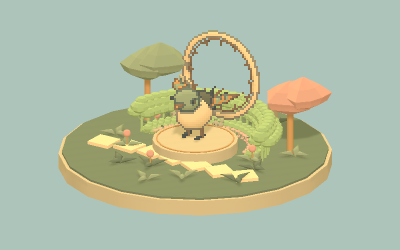
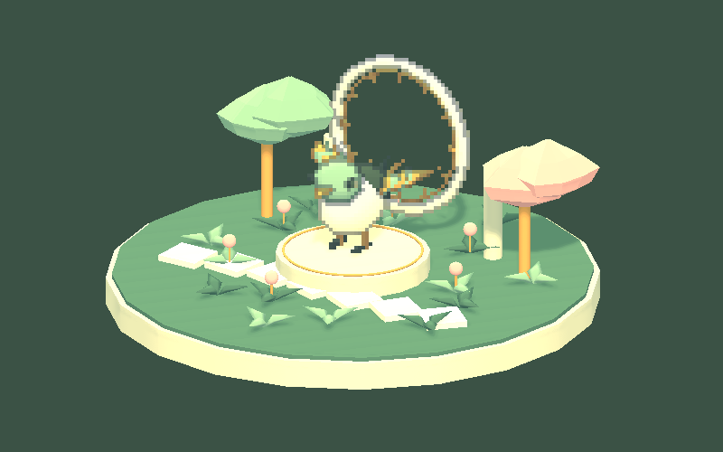
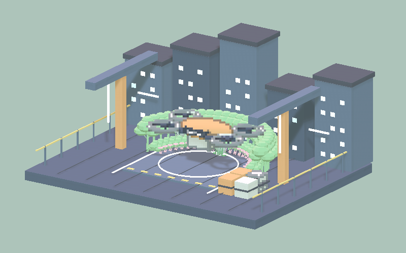
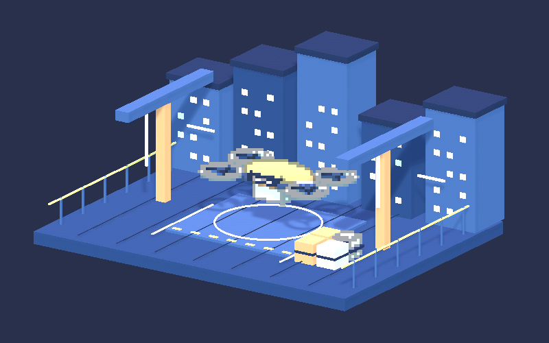
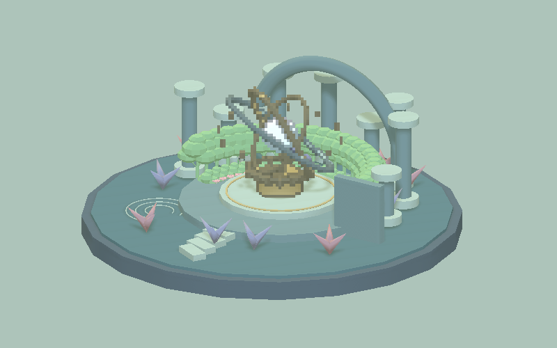
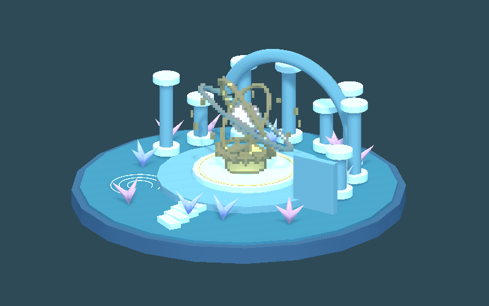

Tracefolio REPORTS & ISSUES
Tracefolio REPORTS & ISSUESCamera 예제3개 이전 디자인 복원·폐기된16개 제거
완료고객용3개로 정리된 Camera에 개발 Legacy16개를 다시 수정 대상으로 포함한 잘못을 바로잡았습니다. Camera만 이전 디자인으로 복원하고 식생은 유지했습니다.
작업 결과
Camera 예제는 Clockwork Garden·Neon Courier·Sunken Observatory3개만 Assets에 남겼습니다. 이번 파스텔·추가 배치 변경을 이전 파일로 복원했습니다. 사용자가 카메라만 복원하도록 지정했으므로 식생 수정은 보존했습니다.
변경 내용
적용 내용
폐기된16개는 Assets/TurnRoom/PixoraStudio/PixelCamera/Development/LegacySamples/Scenes에 남아 있었습니다. 현재 고객용3개와 별개인 개발용 과거 자료인데 전체 예제 수정 대상으로 잘못 포함했습니다. LegacySamples 전체와 이번에 추가한 사용하지 않는 PastelGarden 장식을 Assets에서 제거했습니다. 작업 이력은 Docs/Testing 안에 보존했으며 Unity 에셋·고객 패키지에 포함하지 않습니다.
3개 씬·재질·ShowcaseTour37파일을 변경 전 원본과 SHA256이 같게 복원하고9언어 문서의 이번 파스텔 안내도 제거했습니다. 기존 패키지 규칙은 Development를 제외하므로 이전16개를 고객 패키지로 다시 판매한 것은 아닙니다. 현재 패키지도3개 씬만 포함하도록 확인합니다.
Clockwork Garden
복원 전 변경본의 실제 기존 촬영입니다.

복원한 파일과 바이트가 같은 이전 버전의 실제 촬영입니다. 이번 회차 재촬영은 아닙니다.

Neon Courier
복원 전 변경본의 실제 기존 촬영입니다.

복원한 파일과 바이트가 같은 이전 버전의 실제 촬영입니다. 이번 회차 재촬영은 아닙니다.

Sunken Observatory
복원 전 변경본의 실제 기존 촬영입니다.

복원한 파일과 바이트가 같은 이전 버전의 실제 촬영입니다. 이번 회차 재촬영은 아닙니다.

검증
Assets 아래 Camera .unity가 정확히3개인지 확인했습니다. 복원37파일의 기준본 해시 일치,GUID 보존,제거한 리소스에 대한 남은 씬·프리팹·재질·에셋의 GUID 참조0개,기존 Build Settings에 제거 리소스 참조0개를 검사했습니다. 식생 렌더 소스108개는 직전 최종 촬영 해시와 그대로 일치했습니다.
화면 비간섭을 위해 Unity를 새로 실행하거나 화면을 조작하지 않았습니다. 첨부한 이전 실제 화면은 이번 복원과 동일한 소스의 참고이며 이번 수정 후 실제 재촬영으로 표시하지 않습니다.
남은 사항
파일 복원과 Assets 내 이전16개 제거는 완료했습니다. 이번 회차 Unity 재실행·재촬영과 네이티브 설치는 미실행입니다. 이전 파스텔 보고서는 당시 이력으로 보존하며 현재 Camera 디자인을 나타내지 않습니다. 교훈: 폐기된 예제를 활성 범위로 재포함하지 않도록 프로젝트 PixoraAuthoring 지침에3개 범위를 기록했습니다. 특정 제품 요구이므로 전역 지침 변경 없음.
작업 시간
- 제안 시간: 확인·파일 복원·정적 대조2~4분; 패키지 재생성과 공개 배포는 별도 확인
- 실제로 완료된 시간: 2026-11-04 05:21:30 KST 시작. 파일 복원·제거 및 정적 대조는05:23:30 KST까지 완료 확인(약2분). 패키지·보고서 공개 확인 시간은 최종 채팅에 기록합니다.
- XERJ: 실패 — 직전 XERJ 시작은 data dir node.lock 점유 오류로 실패했습니다. 이번 범위는 파일 목록·직접 소스·GUID 검색과 SHA256 대조로 확인했습니다.